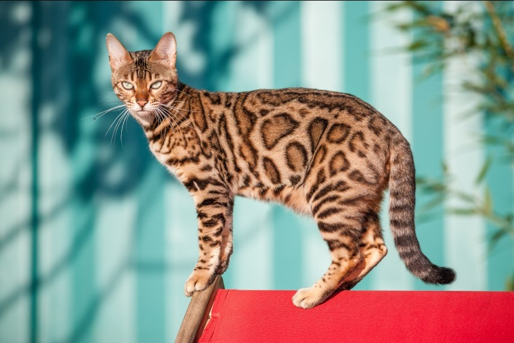

Maine Coon
Maine Coon to jedna z największych ras domowych kotów, znana ze swojej długiej, gęstej sierści i dużych, tęczowych oczu. Są to koty bardzo towarzyskie, inteligentne i z natury są dobrymi mysliwymi.

Bengalski
Koty bengalskie są unikalne dzięki swojemu dzikowatemu wyglądowi, który zawdzięczają swojemu dziedzictwu po dzikim kocie lamparcie. Są to koty aktywne i zabawne, które uwielbiają zabawy i interakcje z ludźmi.
Sphynx
Sphynx to rasa kota bezsierściowego, która jest znana ze swojego przyjaznego i energicznego temperamentu. Pomimo braku sierści, koty Sphynx wymagają regularnej pielęgnacji, aby utrzymać skórę w dobrym stanie.

Tabela danych o zwierzętach
| Imię | Podgatunek | Wiek | Kolor sierści |
|---|---|---|---|
| Whiskers | Maine Coon | 3 | Szary |
| Bella | Bengalski | 2 | Złoty |
| Sphinx | Sphynx | 4 | Różowy |